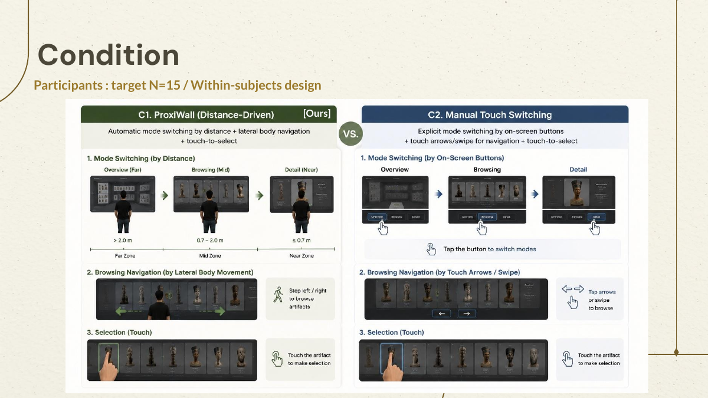
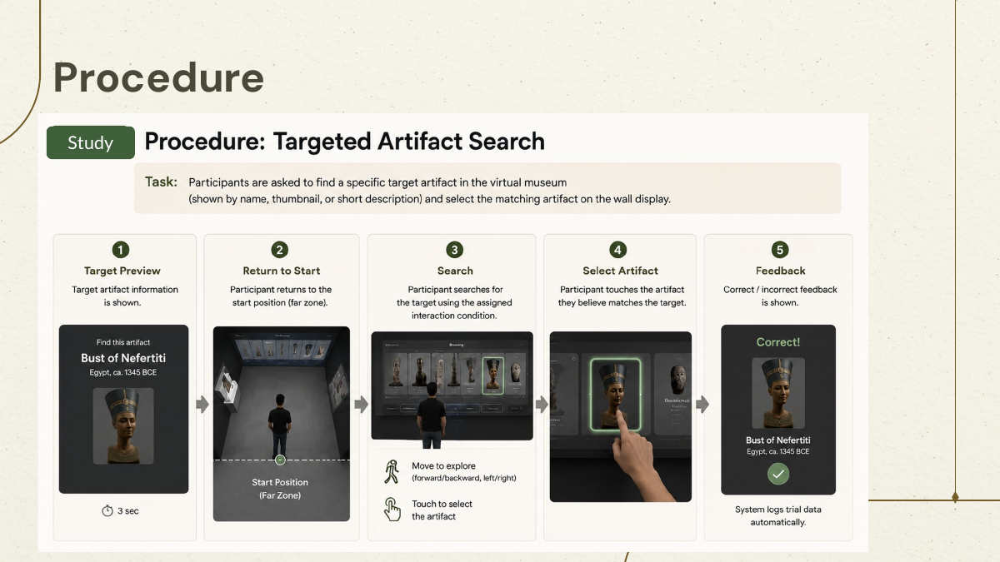

Clarify the roles and context.
The curator–visitor relationship and educational value made the museum scenario compelling.
03 Research & Evaluation
The project combines expert interviews, related-work analysis, parameter design, and a within-subjects study comparing ProxiWall against manual touch switching.
01 / MAIN RESEARCH QUESTION
How can distance-based body input and direct wall touch be designed and evaluated as meaningful interaction modalities for the Overview → Browsing → Selection funnel of a wall-display virtual museum?
02 / EXPERT INTERVIEWS
The curator–visitor relationship and educational value made the museum scenario compelling.
Mode switching alone was not enough; the system needed concrete manipulation and a tighter scope.
03 / HYPOTHESES
ProxiWall will achieve faster task completion than manual touch switching.
ProxiWall will achieve equal or higher task success rate.
ProxiWall will reduce perceived mental workload.
ProxiWall will feel more natural and spatially engaging.
04 / STUDY DESIGN
A target group of 15 participants completes a within-subjects study. The team measures task completion time, selection accuracy, error rate, NASA-TLX workload, spatial presence, perceived naturalness, and qualitative feedback.

